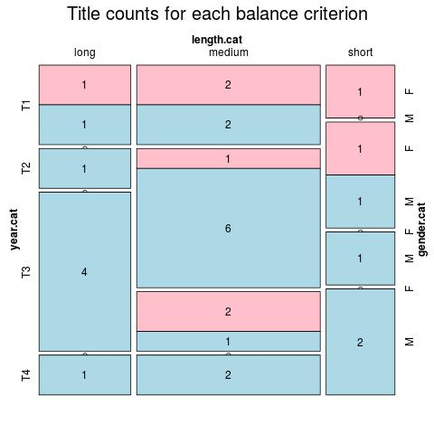

Click on a column heading to sort. Click on a text identifier to read the text (may not work in older browsers).
| Identifier | Encoding | Pages | Words | (Size) | Date (Slot) | Title | Author | Sex | Reprints |
|---|---|---|---|---|---|---|---|---|---|
| SPA1001 | eltec-1 | 424 | 111968 | (long) | 1844 (T1) | El Señor de Bembibre : edición ELTeC | Gil y Carrasco, Enrique (1815-1846) | M | high |
| SPA1007 | eltec-1 | 368 | 54494 | (medium) | 1859 (T1) | La hija del mar : edición ELTeC | Castro, Rosalía de (1837-1885) | F | high |
| SPA1016 | eltec-1 | 327 | 77452 | (medium) | ???? (T1) | La infanta Doña Teresa : edición ELTeC | Torrijos, Manuel (1835-1865) | M | low |
| SPA1021 | eltec-1 | 345 | 54338 | (medium) | ???? (T1) | Sab. Novela original : edición ELTeC | Gómez de Avellaneda, Gertrudis (1814-1873) | F | high |
| SPA1023 | eltec-1 | 26 | 19748 | (short) | ???? (T1) | La velada del helecho o El donativo del diablo: novela : edición ELTeC | Gómez de Avellaneda, Gertrudis (1814-1873) | F | high |
| SPA2001 | eltec-1 | 608 | 91062 | (medium) | ???? (T2) | Ricardo : Edición ELTeC | Castelar y Ripoll, Emilio (1832-1899) | M | medium |
| SPA2001 | eltec-1 | 267 | 51135 | (medium) | 1882 (T2) | Trafalgar : edición ELTeC | Galdós, Benito Pérez (1843-1920) | M | high |
| SPA2008 | eltec-1 | 247 | 22719 | (short) | 1863 (T2) | Un servilón y un liberalito, ó Tres almas de Dios : Edición ELTeC | Caballero, Fernán (1796-1877) | F | high |
| SPA2009 | eltec-1 | 285 | 55015 | (medium) | ???? (T2) | Marianela : edición ELTeC | Pérez Galdós, Benito (1843-1920) | M | high |
| SPA2016 | eltec-1 | 59554 | (medium) | 1879 (T2) | Doña Luz: edición ELTeC | Valera y Alcalá-Galiano, Juan (1824-1905) | M | high | |
| SPA2017 | eltec-1 | 56743 | (medium) | 1874 (T2) | Pepita Jiménez : edición ELTeC | Valera y Alcalá-Galiano, Juan (1824-1905) | M | high | |
| SPA2021 | eltec-1 | 1830 | 426696 | (long) | ???? (T2) | Los caballeros del amor (Memorias del reinado de Carlos III) : edición ELTeC | Castillo, Rafael del (1830-1908) | M | low |
| SPA2035 | eltec-1 | 272 | 51031 | (medium) | ???? (T2) | Memorias de un cortesano de 1815 : Edición ELTeC | Galdós, Benito Pérez (1843-1920) | M | high |
| SPA2039 | eltec-1 | 315 | 60782 | (medium) | ???? (T2) | El equipaje del rey José : edición ElTeC | Pérez Galdós, Benito (1843-1920) | M | high |
| SPA3001 | eltec-1 | 920 | 395208 | (long) | 1887 (T3) | Fortunata y Jacinta : dos historias de casadas : edición ELTeC | Pérez Galdós, Benito (1843-1920) | M | high |
| SPA3002 | eltec-1 | 1115 | 304029 | (long) | ???? (T3) | La Regenta : Edición ELTeC | Alas, Leopoldo (1852-1901) | M | high |
| SPA3003 | eltec-1 | 436 | 89525 | (medium) | 1890 (T3) | Su único hijo : edición ELTeC | Alas, Leopoldo (1852-1901) | M | high |